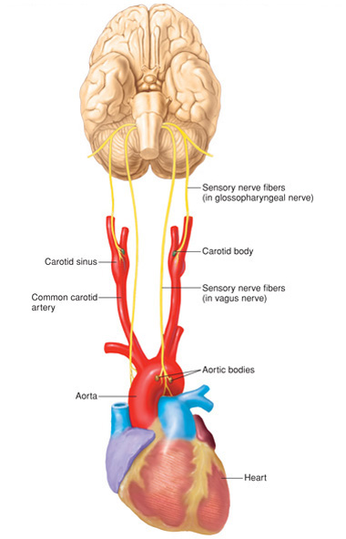

- 2 groups of chemoreceptors that monitor changes in blood PCO2, PO2, and pH.
- Central chemoreceptors:
- Located in medulla, different from the rhythmicity center.
- More sensitive to blood PCO2 than blood pH (due to the BBB).
- Peripheral chemoreceptors:
- Carotid and aortic bodies
- Directly detect changes in PO2
- Indirectly detect changes in PCO2 through pH
- H2O + CO2 H2CO3 H+ + HCO3-
- More sensitive to changes in blood pH than PO2
- Peripheral Chemoreceptors
